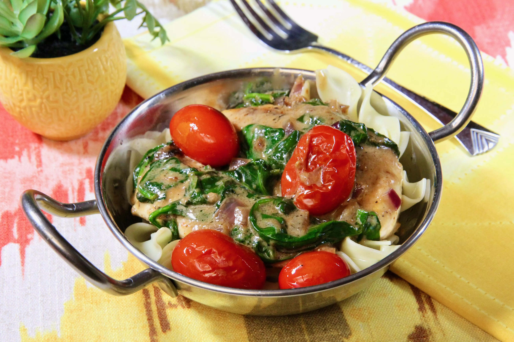

Tuscan Chicken

Description:
This easy recipe has a flavorful sauce that uses the bounty of cherry tomatoes from the garden. Serve over rice or with noodles, or with garlic bread or bruschetta.
Ingredients
- 3 tablespoons olive oil
- 4 (4 ounce) skinless, boneless chicken breast halves, butterflied
- 1 pinch cayenne pepper, or to taste
- ½ cup chopped onion
- 5 cloves garlic, minced
- 1 pint cherry tomatoes, halved
- ½ (8 ounce) package fresh spinach
- 1½ cups coconut cream
- 1 cup shredded Parmesan cheese
Steps
- Heat oil in a large skillet over medium heat. Season chicken with cayenne, salt, and pepper. Add chicken to the hot skillet and brown for 4 minutes on each side. Remove chicken to a plate; it will not be cooked through yet.
- Add onion to the hot skillet; saute until translucent, about 5 minutes. Add garlic and cook until fragrant, about 30 seconds. Add cherry tomatoes; cook until skins begin to wrinkle, about 2 minutes. Add spinach and cook until wilted, 1 to 2 minutes.
- Add coconut cream and Parmesan cheese; simmer for 7 to 10 minutes. Return chicken to the pan and simmer, basting with the sauce as it cooks, until the juices run clear, another 7 to 10 minutes.